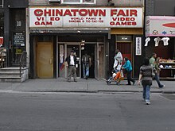

Fighting Game Community
The fighting game community, often abbreviated to FGC, is a collective of video gamers who play fighting games such as Marvel vs. Capcom, Mortal Kombat, Soulcalibur, Street Fighter, Guilty Gear, The King of Fighters, Blazblue, Super Smash Bros., Tekken, Mobile Suit Gundam: Extreme Vs., Dead or Alive, Samurai Shodown, Shadow Fight 2 and many others. The fighting game community started out small in the late 1990s and throughout the 2000s referred to as the grassroots era, but it has grown to a larger scale in the 2010s, with many tournaments being held around the world. This is predominantly due to the rise of esports, online gaming, and digitized viewing habits on live streaming sites such as Twitch.
History
Beginnings
The game Street Fighter II: The World Warrior was a huge success when it was released in 1991 and is regarded as one of the most influential video games of all time. It refined and popularized the fighting game genre and introduced many now-staples of the genre, such as combos and character selection but most notably, it allowed players to directly compete by fighting against each other in the game, while earlier games primarily had players compete by comparing highscores. During the mid-1990s, a Street Fighter II tournament scene had coalesced in various cities across the United States. Highly competitive communities formed naturally in Chinatown Fair in New York City, Super Just Games in the Chicago area, and the Golfland arcade halls in Sunnyvale and Stanton, California. Players had also began finding each other and discussing strategies on message boards via the internet. In 1996, the first nation-wide fighting game tournament was held in the form of B3: Battle by the Bay. This tournament was conceived in order to quell debate over who was the best Street Fighter player in the country, but also attracted international competitors.
2000-2009: Early Years
In early 2000, a forum was created called Shoryuken.com which was named after the iconic Street Fighter attack. The site became the main go to forum for many fighting game competitors and it quickly attracted the community to create major tournaments to gather the best players from around the country. One of the most major tournaments that gathers players from around the world is called The Evolution Championship Series (EVO). The rise in competitive video game genres during the 2000s became a phenomenon known as Esports. The early 2000s also saw the rise in online gaming as Mortal Kombat: Deception, Dead or Alive Ultimate, and the Xbox version of Street Fighter Anniversary Collection became the first fighting games to offer online multiplayer, which also contributed in growing the community. In middle of the 2000s Capcom’s popularity began to fade due to lack of new fighting games, the overall sales of the genre, and some problems within the community; though it could be noted that the lack of a new street fighter game created a popularity vacuum, in which games like Tekken, Soulcaliber, Dead or Alive, and Virtua Fighter increased in popularity.
It was not until 2007 that a new spark arose in the fighting game community. Dead or Alive 4 was included in the Championship Gaming Series in 2007 and 2008. It was the only fighting game included in the esport league and was operated and fully broadcast by DirecTV in association with British Sky Broadcasting (BSkyB) and STAR TV, making Dead or Alive 4 the first fighting game to have a televised esport event. After nearly a decade without an entry, Capcom announced the continuation of the mainline Street Fighter series with the development of Street Fighter IV, following up Street Fighter III: Third Strike after eight years. The game was acclaimed by major game review outlets and is seen as the chief catalyst of the revival of the FGC. By rejuvenating the popularity of fighting games, its release also created an influx of new players into the community, increasing the number of competitors and introducing legendary players such as SonicFox, Momochi, Snake Eyez, GamerBee, and others.
2010-current
After the success of Street Fighter IV, new fighting games began being developed and the FGC expanded with more tournaments. The tournaments even started being live-streamed with Twitch so many people can view the tournaments. There are also sponsor-ships from franchises like Evil Geniuses, Broken Tier, and Mad Catz, which pays players for free advertisement.
Despite the rise of other competitive video game genres, many members of the FGC have rejected the label of “Esports” on their community.
The overall size of the community remains a very small proportion of the fighting game market overall. Some of the genre’s biggest selling games, such as Tekken 5, Super Smash Bros. Ultimate and Mortal Kombat X, have sold in excess of 5 million copies. In contrast, the same games might only attract 1,000–2,000 entrants at a large tournament. Typically some 20–30% of players fight online.
In recent years, the FGC has been rocked by numerous sexual assault and harassment allegations involving legal proceedings, including those of some of the FGC’s most prominent organizers like EVO co-founder and organizer, Joey Cuellar, and some of the FGC’s most prominent Smash Bros players.
In 2020, the Japan Fighting Game Publishers Roundtable was announced where game development heads for Dead or Alive, Fighting EX Layer, Guilty Gear, Samurai Showdown, Soulcalibur, Street Fighter and Tekken, came together for a livestreamed discussion on the future of fighting games and other topics. The event later followed with more developers, such as the developers for King of Fighters in 2021, and Virtua Fighter in 2022.
Tournaments
Hundreds of online and offline tournaments are held worldwide every year, ranging anywhere in size from less than ten to over 10,000 entrants, depending on the location, entry fee, prize pot, and game or range of games available. Tournaments are typically run through grassroots community efforts, although an increasing number of tournaments are being sponsored by stakeholders like Capcom, Twitch, Red Bull, and Nintendo.
Hundreds of online and offline tournaments are held worldwide every year, ranging anywhere in size from less than ten to over 10,000 entrants, depending on the location, entry fee, prize pot, and game or range of games available. Tournaments are typically run through grassroots community efforts, although an increasing number of tournaments are being sponsored by stakeholders like Capcom, Twitch, Red Bull, and Nintendo.
Examples of large fighting game tournaments and tournament series include:
- Apex
- Capcom Cup (which is led up to by the Capcom Pro Tour)
- Community Effort Orlando
- DreamHack
- Evolution Championship Series (or EVO, and EVO Japan)
- Pokémon World Championships (Pokkén Tournament)
- Tougeki – Super Battle Opera (defunct)
- VSFighting